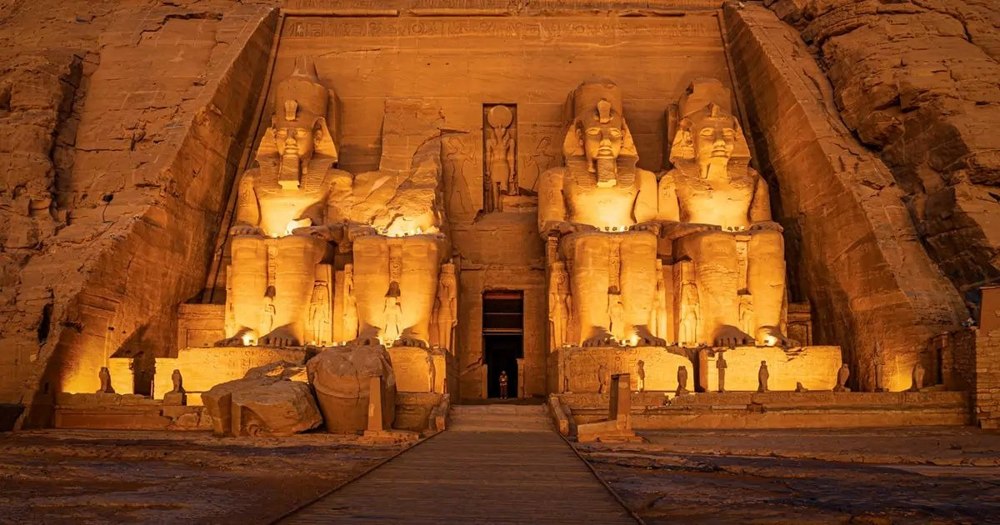

Abu Simbel Temples

Carved directly out of a solid sandstone cliff in Nubia during the 13th century BCE, the Abu Simbel Temples are a lasting monument to Pharaoh Ramses II and his beloved queen, Nefertari. The Great Temple features four colossal 20-meter-tall seated statues of Ramses flanking the entrance, designed to project Egyptian power to southern neighbors and commemorate his perceived victory at the Battle of Kadesh. The smaller temple is uniquely dedicated to Queen Nefertari and the goddess Hathor, marking one of the few times in Egyptian history a queen was elevated to such monumental status. In the 1960s, the entire complex faced complete submersion due to the creation of Lake Nasser following the construction of the Aswan High Dam. In a historic, UNESCO-led rescue operation, the temples were meticulously cut into massive blocks, raised, and reassembled on higher ground. The engineers perfectly preserved the temple's ancient solar alignment, which allows the sun to illuminate the inner sanctuary statues twice a year on Ramses' birthday and coronation day.
Explore Abu Simbel Temples
| Location | Ticket Price (Foreign Tourist) | Visiting Hours |
|---|---|---|
| Abu Simbel, Aswan (Near Sudan border) |
Adult: 822 EGP Student: 411 EGP |
6:00 AM – 5:00 PM |